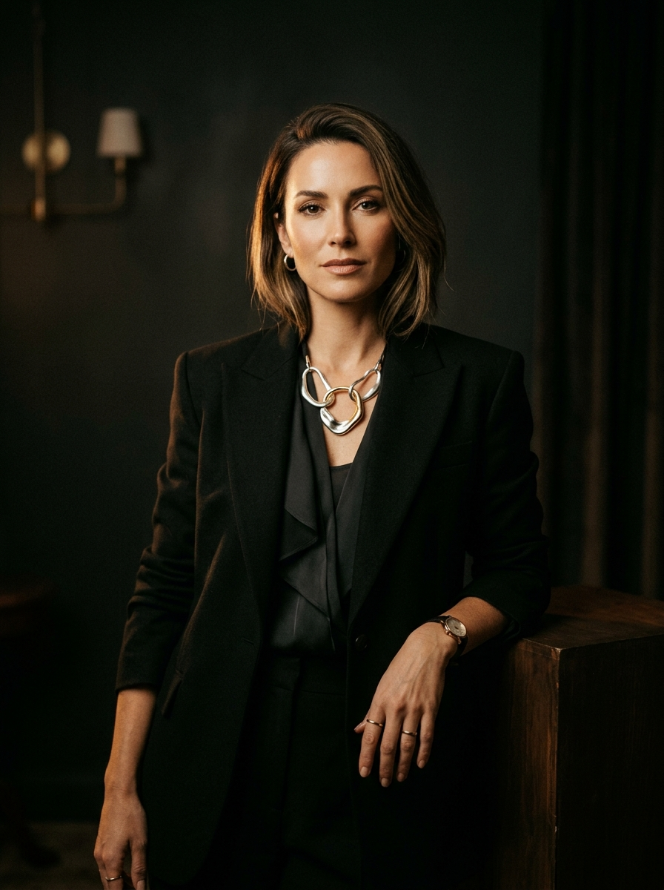
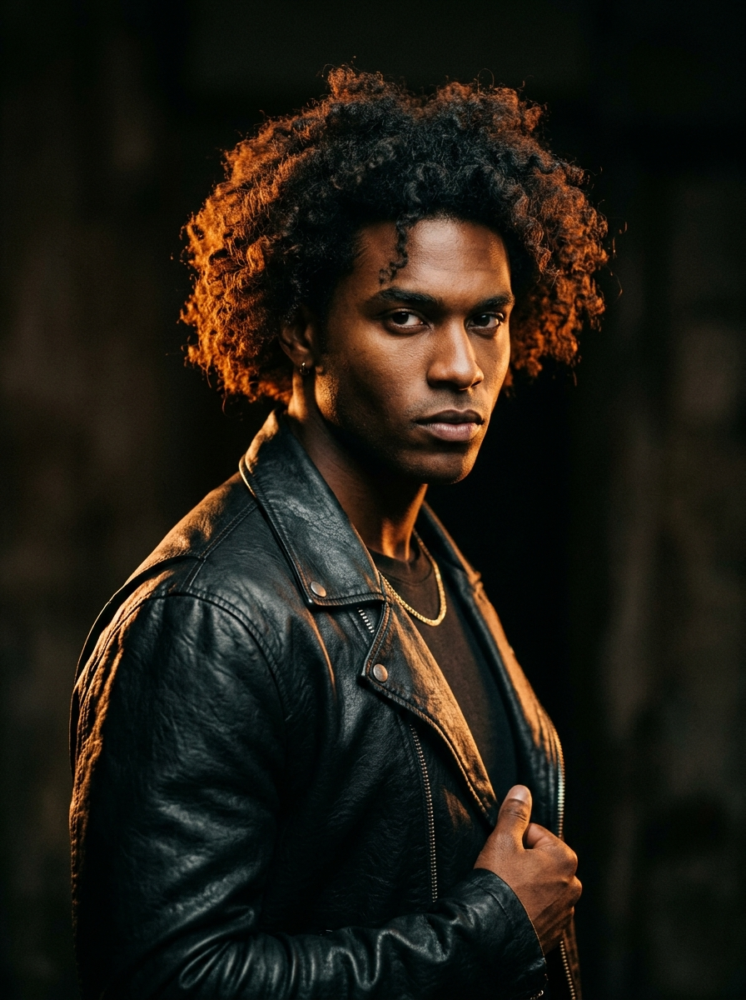
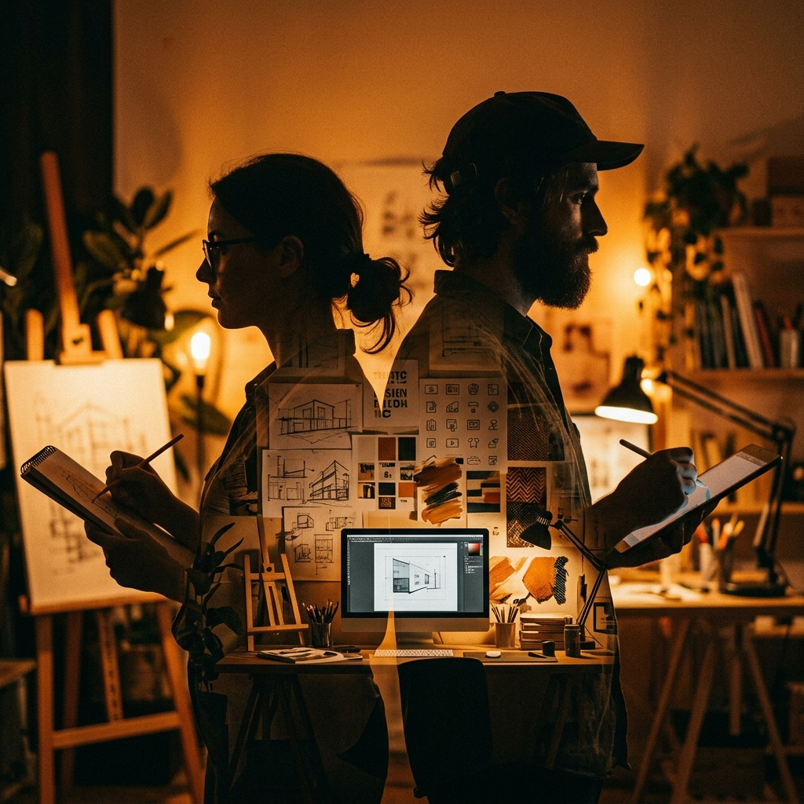

Full-stack web developer, systems engineer, and multimedia producer bridging the gap between robust technology and cinematic digital storytelling.
Indusara Media Network, RadioEka, and digital ecosystems
Reliable back-end management and streaming architecture


St. John's College, Nugegoda • Founder of Luminex
Currently pursuing G.C.E. Advanced Level (A/L) studies at St. John's College, Nugegoda, serving as a distinguished student leader, system engineer, and award-winning multimedia creator.
Combining deep technical proficiency in full-stack web development and broadcast engineering with cinematic artistry, directing, and music production.
Active websites & broadcast networks under infrastructure

President of ICT, Media, Photo Societies & Leo Club
Building scalable web solutions and managing 20+ active websites like radioeka.lk.
TV & radio streaming server installation, backend maintenance, and 24/7 stream automation.
Scriptwriting, directing, DSLR photography, and advanced video editing (Premiere, DaVinci).
Lyric writing, music composition, mixing, and mastering using FL Studio and Cubase.
Cross-functional collaboration, broadcast systems engineering, and student leadership.
Track record across Sri Lanka’s pioneer web TV network, software operations, independent creative ventures, and national school media competitions.
Indusara Media Network / TV (2021 - Present)
Managing technical back-end, web development, and streaming servers for Sri Lanka's pioneer Web TV network (indusara.com), maintaining 20+ active sites like radioeka.lk.
Nysco TV & Radio (April 2022 - Present)
Handling software development, broadcast systems engineering, and managing network technical operations.
Luminex (Present)
Leading an independent creative venture focused on high-impact digital solutions, modern web development, and multimedia content.
Have a project in mind, need a robust web platform built, or looking for expert multimedia production?
Email: devnith@luminex.lk / hello@formix.studio
Location: Nugegoda, Sri Lanka
Send an Email